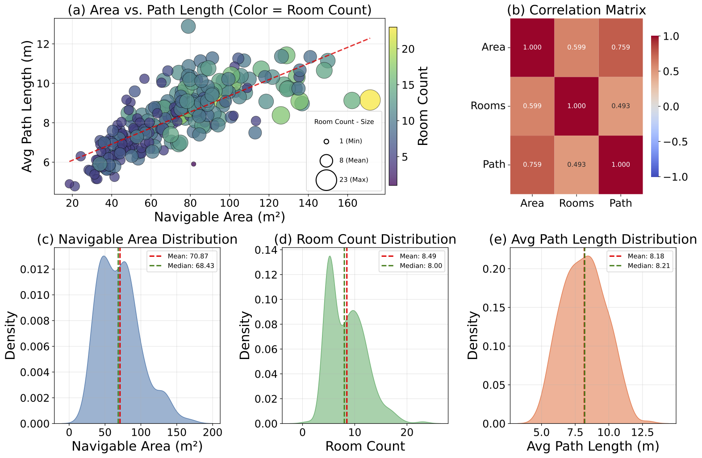

We visualize the agent's trajectories.
Despite remarkable progress in Vision-Language Navigation (VLN), existing benchmarks remain confined to fixed, small-scale datasets with naive physical simulation. These shortcomings limit the insight that the benchmarks provide into sim-to-real generalization, and create a significant research gap. Furthermore, task fragmentation prevents unified/shared progress in the area, while limited data scales fail to meet the demands of modern LLM-based pretraining. To overcome these limitations, we introduce VLNVerse: a new large-scale, extensible benchmark designed for Versatile, Embodied, Realistic Simulation, and Evaluation. VLNVerse redefines VLN as a scalable, full-stack embodied AI problem. Its Versatile nature unifies previously fragmented tasks into a single framework and provides an extensible toolkit for researchers. Its Embodied design moves beyond intangible and teleporting "ghost" agents that support full-kinematics in a Realistic Simulation powered by a robust physics engine. We leverage the scale and diversity of VLNVerse to conduct a comprehensive Evaluation of existing methods, from classic models to MLLM-based agents. We also propose a novel unified multi-task model capable of addressing all tasks within the benchmark. VLNVerse aims to narrow the gap between simulated navigation and real-world generalization, providing the community with a vital tool to boost research towards scalable, general-purpose embodied locomotion agents.
[Instruction placeholder - to be filled with actual navigation instructions]
Navigable Area
Navigation Instruction
Instruction Hierarchy
Landmarks
Instruction Length